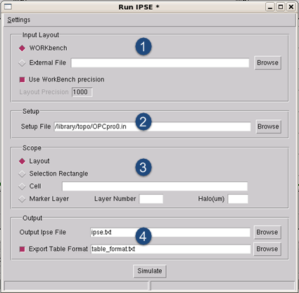

Open
Calibre IPSE in Calibre WORKbench ( menu
item).
Prerequisites
The test
pattern layout loaded into the Calibre WORKbench tool.
A setup file
that specifies the locations of the optical and resist model (CTR or
VT5). You can create a compatible setup file in the RET Flow Tool
as a Calibre OPCpro session.
Procedure
- In the
Image Parameter Space Exploration Tool, choose to
raise the IPSE Run dialog box (Figure 1). Fill out the Input Layout section:
- Select the input type:
- Select the precision:
Figure 1. Image Parameter Space Tool
- Provide
a Calibre OPCpro setup (.in) file that contains
information about your design file.
Tip You can create a compatible setup
file using the Calibre RET Flow Tool. Create an OPCpro session,
enter relevant values, and select .
- Fill out the Scope section
in order to set the region of the layout to simulate:
Layout — Uses the entire
layout in the simulation.
Selection Rectangle — Uses
the selected area of the layout in the simulation; be sure to select
a region before clicking Simulate. You have
a maximum selection limit of 400x400um.
Cell — Uses the cell that
you name as the simulation region.
Marker Layer — Calibre
IPSE performs simulation on the sites on the OPC or correction layers
according to their location as described in Table 1.
Table 1. Marker Layer BehaviorIf the Site Is…
|
Calibre IPSE…
|
|---|
Covered by the marker
(blue sites)
|
Simulates the site and
writes the results to output text file
|
Not covered by the marker,
but within the marker boundary + the specified Halo distance in um
(extended marker) (yellow sites)
|
Simulates the site, but
the results are not written to the output text file
|
Outside the marker+Halo
distance (cyan sites)
|
Ignores the site
|
Figure 2. Marker Layer Effects
- Set the name of the output
file (you can include a relative or absolute path). The default
path is a hidden file, .calibrewb_workspace/ipse.txt.
You can change this to any file name or directory path.
- Optionally,
adjust the run settings (choose to
open the dialog box, as seen in Figure 3) for your hardware environment.
Figure 3. Calibre IPSE Run Settings
Dialog Box
Tip You can
add environment variables that apply directly to the Calibre IPSE
run by clicking the Environment button in
the Run Settings dialog box, and using the dialog box that appears.
- Optionally,
set the layer output for the various plot tools using the Marking
Layer dialog box ( menu
item).
Figure 4. Marking Layer Dialog Box
- Click Simulate.
Results
The Calibre IPSE tool simulates the
aerial image using the fragmentation scheme in your setup file,
the optical model, and the resist model, based on the layout. A
log and run control dialog box appears, showing the progress of
the simulation.
Figure 5. Calibre IPSE Run Dialog
Abort —
Stops the simulation.
Close —
Closes the run dialog without saving the log file.
Save —
Saves the log file to a filename of your choosing.